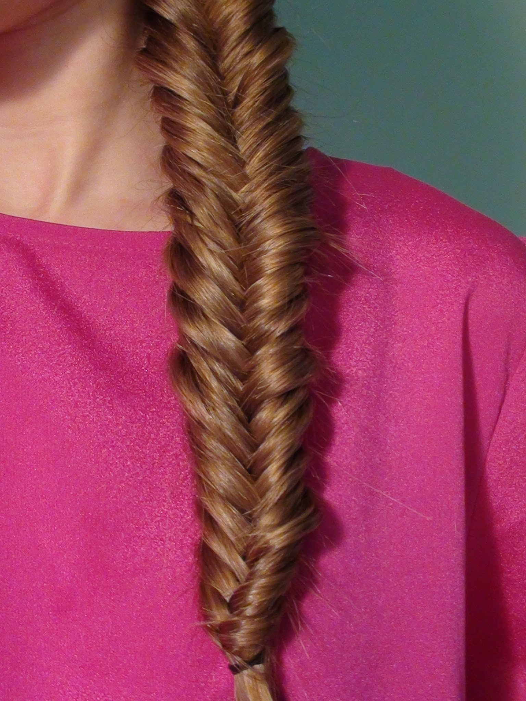
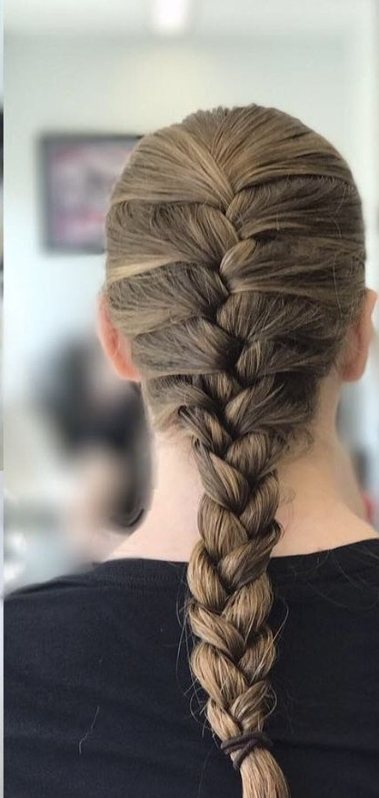
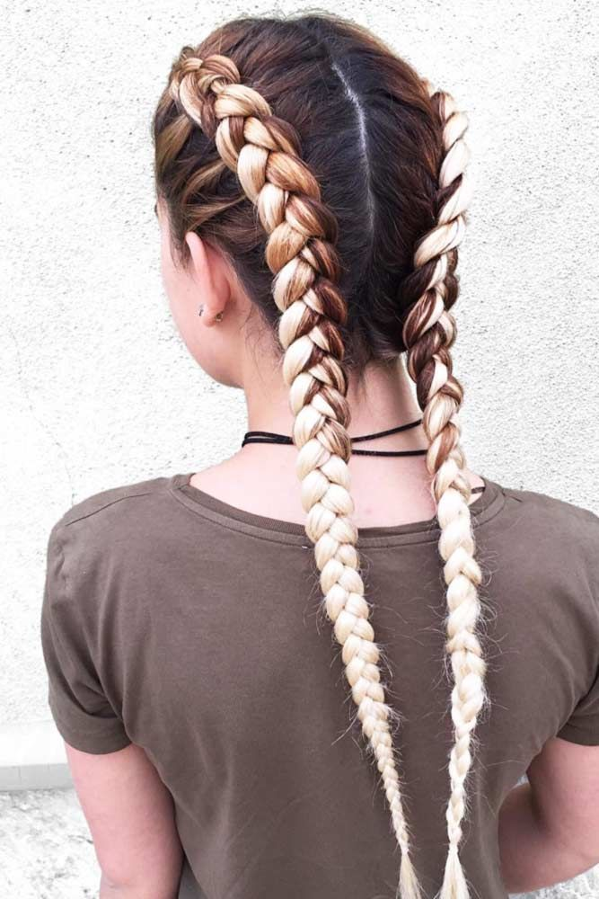
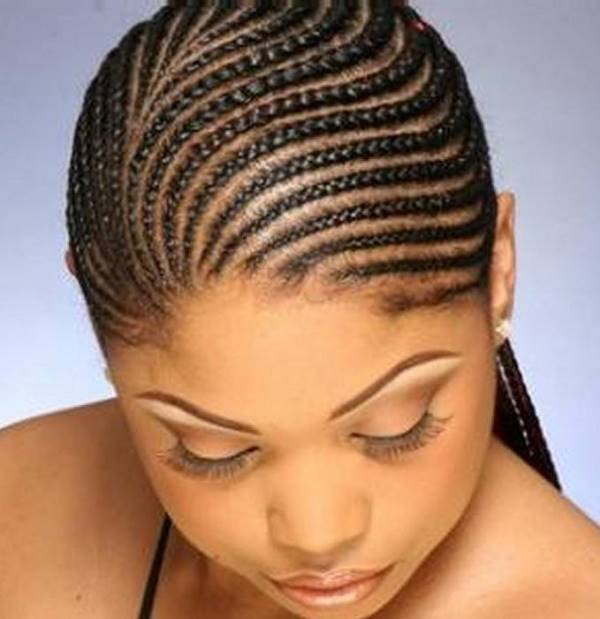
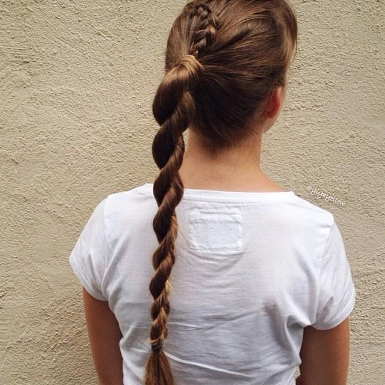
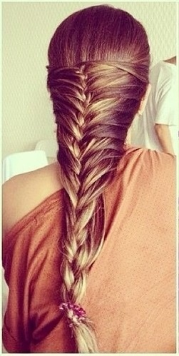
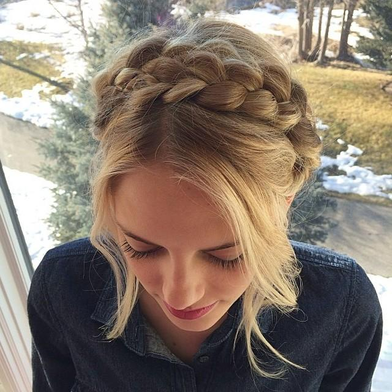

1. The regular 3-strand braid
Now here's a classic and easy-to-do braid. This is the first type of braid that women tend to learn, I think, and I remember this being the first one I learned myself.
Back to top
2. The fishtail braid
This braid is easier to do at the side rather than at the back, though you can certainly do it at the back of your head. Basically with this one, it's like doing a regular braid, but you cross sections of one strand of hair over to the other repeatedly.
Back to top
3. The French braid
This braid is kind of like the regular 3-strand braid mentioned above, but you start at the top of the back of your head, add hair from each side as you braid from there, and then braid the rest of your hair the regular way when you get to the nape of your neck. This type of braid is great for keeping your hair out of the way when you travel or work out, but it can be for when you're not doing either as well. I personally could never get this one right even with a french braiding tool, until I found an easier way to do it on YouTube.
Back to top
4. The Dutch braid
So this braid is pretty much the reverse of the French braid, and is called as such sometimes. Instead of having strands go over the middle, they go under, and then the braid seems like it's popping out in the end. You can wear this one at the back of your head or at the sides.
Back to top
5. Cornrow braids
These braids are considered fun and practical. They also protect your hair from heat damage. Cornrow braids are worn more often by African-American women and girls, as they have naturally curly hair and it is hard to style it, so these braids help in that sense.
Back to top
6. The rope braid
This type of braid is also called a false braid. It's kind of easy to do, as all you've got to do is part your hair into two strands, twist each in opposite directions, and then wrap them around each other. Rope braids are popular for their simplicity. I personally learned how to do them when I was in college and I thought they looked lovely. (In the picture, the rope braid is the part of the girl's hair that is from the beginning of the ponytail to the end.)
Back to top
7. The mermaid braid
I think this type of braid has its name because from top to bottom, it's the shape of a mermaid's tail. There are different ways to style this one, but I've found that it's easier than it looks. The easiest version I've seen is just making two regular 3-strand braids, one at each side of your head, then securing them together at their backs with a bobby pin. Depicted below is just one look of the mermaid braid.
Back to top
8. The milkmaid braid
In the past, this kind of braid was the way early milkmaids did their hair, more because it was practical for working, whether or not it was hot. Sources say the milkmaid braid came from either Sweden, Switzerland, Germany, Austria, or Greece. Now it's a popular way to wear your hair. You can do this one with regular braids and/or fishtail braids. The milkmaid braid is not as hard as it looks and there are different versions of it.
Back to top
Links for More Info:
HairStyleHub: 40 Different Types of Braids
BeautyLish: Braids 101
Cosmopolitan: 17 Mesmerizing GIFs of How to Create Every Braid You've Ever Been Obsessed With
Back to top